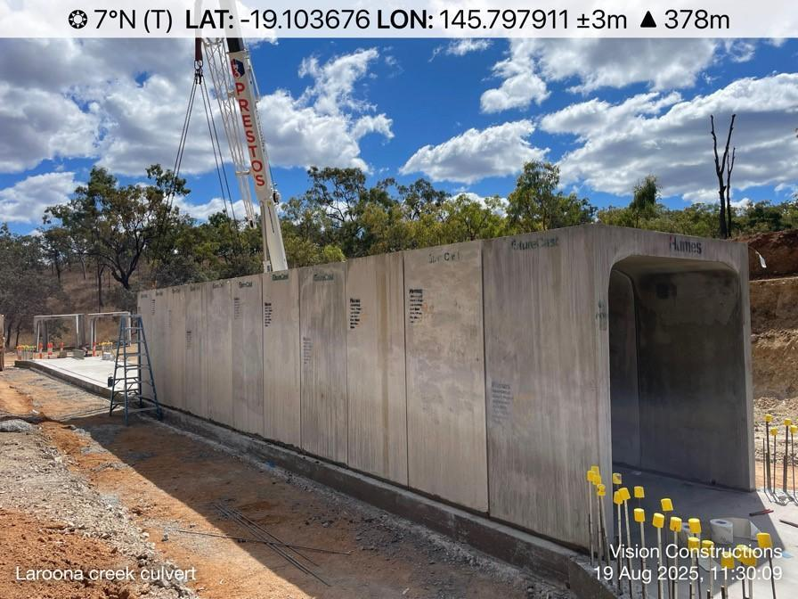
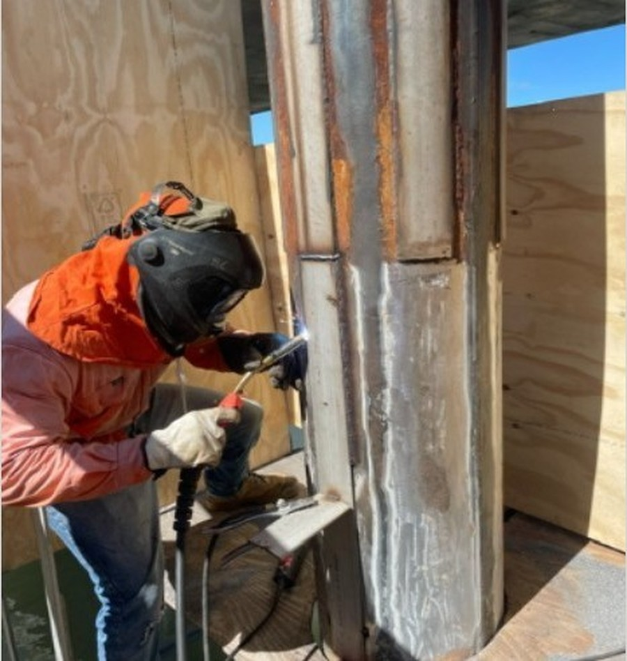
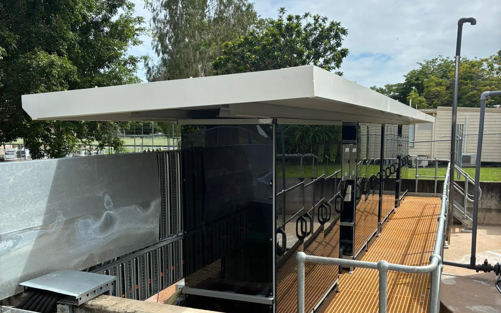

Culvert Installation
Culvert installation works along Laroona Road, Hervey Range, with crews mobilising daily from Townsville. Scope included reinforced concrete bases, cut-off walls, and multi-cell culvert structures — delivered through repetitive cycles of blinding concrete, reinforcing steel, formwork, and sequential pours within a live road corridor.

Sludge Lagoon Extension
Expansion of a water treatment plant sludge lagoon, including underdrain systems, inlet and discharge pipework, concrete structures, and valve systems. Works involved connection to the existing discharge well with engulfment protection measures.

Jetty Maintenance & Upgrades
Repair and upgrade of a marine research service pontoon at Cape Cleveland, delivered as staged maintenance to ensure continuous personnel access. Works included modifying guide roller cradles for free tidal movement and surface preparation of early paint deterioration on piles.

STP Structural Concrete Works
Principal contractor for full civil concrete works at a Sewage Treatment Plant expansion. Scope included footing excavation, formwork, reinforcement, plinths and nib walls, and concrete supply and placement — delivered with zero re-work and under programme.

Jetty Guide Pile Repairs
Design, fabrication, and installation of custom access systems for guide pile repairs in a tidal environment. Works included encapsulation and environmental controls, surface preparation, and full seal welding of 316 stainless flat bars around each pile.

Chemical Dosing Skids
Two-stage structural and mechanical installation at a water treatment plant lime dosing shed. Stage 1 relocated and secured four dosing skids onto a prepared FRP mesh platform; Stage 2 installed outlet, ACH supply, and service water pipework to integrate the skids into the site's dosing system.